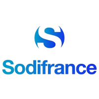
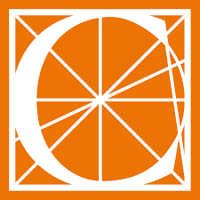

Qui suis-je ?
Actuellement stagiaire au CRM, je suis passé par de multiples orientations professionnelles. J'ai d'abord été ébéniste d'art au sein des Compagnons du Tour de France, puis manager dans la restauration rapide avant de devenir Assistant RH. Actuellement, je me réoriente dans la sécurité informatique. J'ai dans un premier temps suivi une formation d'administrateur réseau et je suis désormais une formation de développeur. Mon objectif est de faire de la programmation bas niveau afin de travailler sur des protocoles réseaux.
Télecharger mon CVInformations de contact
| Nom : | Aurélien BOUDIER |
|---|---|
| Adresse : | 1 rue de la Maréchale, chez Mr PALOS PINTO, 17000 LA ROCHELLE |
| Téléphone : | 06 74 26 82 60 |
| Mail : | auboudier.pro@gmail.com |
| Permis : | B + Véhicule |
Expériences professionnelles
| Stagiaire en supervision de réseaux | |
| Agence France Presse | |
| Mai 2018 - Juillet 2018 | |
| Paris | |
| Supervision, Scripting, NRPE, NSClient++, Centreon |
|  | Stagiaire en informatique |
|---|---|
| Sodifrance | |
| Avril 2017 | |
| Le Mans | |
| Rédaction de spécifications fonctionnelles générales et détaillées, Etude des risques de failles de sécurité. |
 |
Manager et Assistant RH |
|---|---|
| McDonald's | |
| 2009 -2016 | |
| Paris | |
| Gestion d'équipes, Suivi des procedures HACCP, Gestion administrative, Préparation d'audits financiers/RH/sécurité |
|  | ébéniste, Menuisier, Chef d'équipe |
|---|---|
| Tour de France | |
| 2004 - 2008 | |
| Mouchard, Paris, Grenoble, Tours | |
| Création et pose de meubles de luxe, Fabrication d'escaliers, Gestion d'équipes |
Formations
 |
Concepteur Développeur d'Applications |
|---|---|
| Centre de Réadaptation de Mulhouse | |
| Novembre 2019 - Aujourd'hui | |
| Mulhouse | |
| Titre professionnel de niveau IV (Bac +3) |
 |
Développeur |
|---|---|
| Ecole 42 | |
| Septembre 2018 - Juillet 2019 | |
| Paris | |
| Diplome d'architecte du numérique (Bac +5) - Non obtenu |
| Technicien supérieur en réseaux et télécoms | |
| AFPA | |
| 2017 -2018 | |
| Champs-sur-Marne | |
| Titre Professionnel de niveau III (Bac +2) |
| Compagnon Ebéniste | |
| Compagnons du Tour de France | |
| 2004 - 2008 | |
| Mouchard, Paris, Grenoble, Tours | |
| CAP ébéniste |
Compétences
| Techniques | |
|---|---|
| Langages de développemnent | C, Java, JS |
| Scripting | Bash, Powershell, Python |
| Langages Web | HTML, CSS, XML, JS |
| Bases de données | SQL, NoSQL, MySQL, MongoDB |
| Systèmes & Réseaux | Routing, Switching, Supervision, Sécurité, Virtualisation, Linux/Windows |
| Gestion | |
| Management & RH | Audits de sécurité alimentaire, Encadrement d'équipe de 25 personnes, Suivi administratif/RH/financier |
| Gestion de projets | Versionning, GIT, Merise, Scrum |
| Langues | |
| Français | Langue maternelle |
| Anglais | Bulats B2 obtenu |
| Birman | Notions orales |